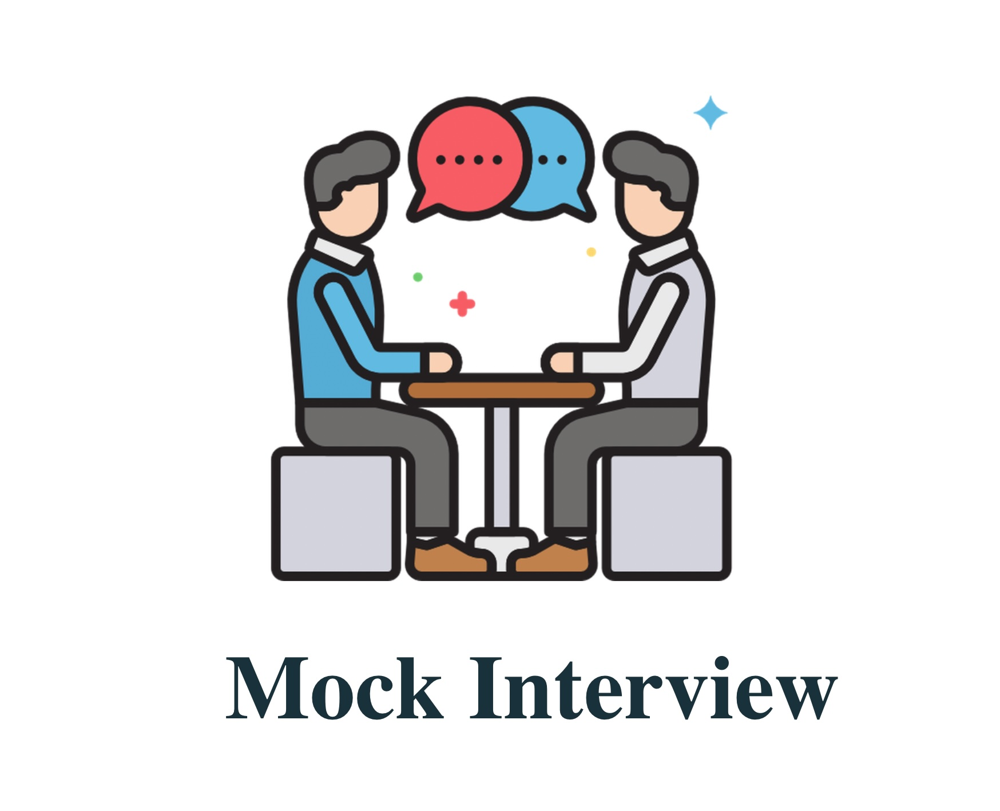

1. Introduction
- Elevator pitch: Craft a concise introduction highlighting key skills
- Personal branding: Develop a memorable personal brand statement.
2. Common Interview Questions
- Behavioral STAR technique: Practice Situation, Task, Action, and Result responses.
- Tailoring responses: Customize answers to showcase relevance to the specific role.
3. Behavioral Questions
- Leadership scenarios: Discuss instances demonstrating leadership skills.
- Adaptability examples: Share experiences highlighting adaptability.
4. Technical Questions
- Coding challenges: Practice solving coding problems related to the job.
- Technical project discussions: Be ready to discuss projects in detail.
5. Case Study or Problem-Solving Questions
- Analytical thinking: Demonstrate your ability to analyze and solve problems.
- Communication of solutions: Practice articulating your thought process.
6. Situational Questions
- Handling conflict scenarios: Discuss how you navigate and resolve conflicts.
- Decision-making process: Share insights into your decision-making approach.
7. Industry Knowledge
- Market trends: Stay informed about recent trends impacting the industry.
- Competitive landscape: Discuss competitors and industry positioning.
8. Company-Specific Questions
- Mission alignment: Explain how your values align with the company's mission.
- Recent news impact: Discuss the potential impact of recent news on the company.
9. Resume Review
- Project highlights: Provide specific examples of projects mentioned on your resume.
- Skill proficiency: Discuss your proficiency in skills listed on your resume.
10. Job-Specific Skills Assessment
- Technical skills showcase: Highlight your skills through practical demonstrations.
- Skill relevance: Discuss how your skills directly apply to the job requirements.
11. Behavioral Assessment
- Non-verbal communication: Receive feedback on body language and tone.
- Positive demeanor: Practice maintaining a positive and engaged demeanor.
12. Communication Skills
- Clarity and conciseness: Practice delivering clear and concise responses.
- Active listening: Demonstrate active listening skills during the interview.
13. Time Management
- Answer pacing: Ensure you manage your time well when answering questions.
- Efficient responses: Practice delivering comprehensive responses within time constraints.
14. Handling Stress and Pressure
- Stress response strategies: Develop strategies to stay composed under pressure.
- Positive mindset: Maintain a positive mindset during challenging questions.
15. Questions for the Interviewer
- In-depth inquiries: Prepare insightful questions that demonstrate your interest.
- Clarifying doubts: Seek clarification on any uncertainties about the role.
16. Remote Interviewing Etiquette
- Virtual presence: Project professionalism through effective virtual presence.
- Technical setup: Ensure your virtual setup, including lighting and background, is optimal.
17. Cultural Fit
- Values alignment: Discuss how your personal values align with the company culture.
- Team dynamics: Share experiences highlighting successful collaboration.
18. Negotiation Skills
- Salary research: Conduct research to determine a reasonable salary range.
- Negotiation strategies: Practice asserting your needs while maintaining professionalism.
19. Feedback and Improvement
- Self-assessment: Reflect on your performance and identify areas for improvement.
- Continuous learning: Develop a plan for ongoing improvement based on feedback.
20. Post-Interview Etiquette
- Thank-you email: Craft a thoughtful thank-you email following the interview.
- Follow-up timing: Understand the appropriate timing for post-interview communication.